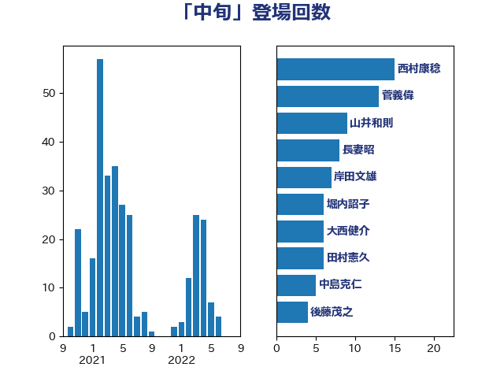

単語「中旬」

| 西村康稔 | 自由民主党 | 15 回 |
| 菅義偉 | 自由民主党 | 13 回 |
| 山井和則 | 立憲民主党 | 9 回 |
| 長妻昭 | 立憲民主党 | 8 回 |
| 岸田文雄 | 自由民主党 | 7 回 |
| 堀内詔子 | 自由民主党 | 6 回 |
| 大西健介 | 立憲民主党 | 6 回 |
| 田村憲久 | 自由民主党 | 6 回 |
| 中島克仁 | 立憲民主党 | 5 回 |
| 後藤茂之 | 自由民主党 | 4 回 |
| 赤羽一嘉 | 公明党 | 4 回 |
| 倉林明子 | 日本共産党 | 3 回 |
| 宮本徹 | 日本共産党 | 3 回 |
| 武田良太 | 自由民主党 | 3 回 |
| 江田憲司 | 立憲民主党 | 3 回 |
| 緑川貴士 | 立憲民主党 | 3 回 |
| 茂木敏充 | 自由民主党 | 3 回 |
| 金子恭之 | 自由民主党 | 3 回 |
| 高橋光男 | 公明党 | 3 回 |
| 高橋千鶴子 | 日本共産党 | 3 回 |
| 三浦信祐 | 公明党 | 2 回 |
| 伊藤岳 | 日本共産党 | 2 回 |
| 佐藤茂樹 | 公明党 | 2 回 |
| 吉田統彦 | 立憲民主党 | 2 回 |
| 和田義明 | 自由民主党 | 2 回 |
| 塩田博昭 | 公明党 | 2 回 |
| 小沢雅仁 | 立憲民主党 | 2 回 |
| 小田原潔 | 自由民主党 | 2 回 |
| 山本博司 | 公明党 | 2 回 |
| 山際大志郎 | 自由民主党 | 2 回 |
| 岩渕友 | 日本共産党 | 2 回 |
| 杉久武 | 公明党 | 2 回 |
| 松野博一 | 自由民主党 | 2 回 |
| 柚木道義 | 立憲民主党 | 2 回 |
| 津島淳 | 自由民主党 | 2 回 |
| 渡辺周 | 立憲民主党 | 2 回 |
| 紙智子 | 日本共産党 | 2 回 |
| こやり隆史 | 自由民主党 | 1 回 |
| 下村博文 | 自由民主党 | 1 回 |
| 井上信治 | 自由民主党 | 1 回 |
| 井上哲士 | 日本共産党 | 1 回 |
| 井坂信彦 | 立憲民主党 | 1 回 |
| 伊藤孝恵 | 国民民主党 | 1 回 |
| 佐藤正久 | 自由民主党 | 1 回 |
| 前原誠司 | 国民民主党 | 1 回 |
| 古屋範子 | 公明党 | 1 回 |
| 古川康 | 自由民主党 | 1 回 |
| 古川禎久 | 自由民主党 | 1 回 |
| 吉川沙織 | 立憲民主党 | 1 回 |
| 吉田とも代 | 日本維新の会 | 1 回 |
| 吉良よし子 | 日本共産党 | 1 回 |
| 安江伸夫 | 公明党 | 1 回 |
| 宮崎政久 | 自由民主党 | 1 回 |
| 山口壯 | 自由民主党 | 1 回 |
| 山田俊男 | 自由民主党 | 1 回 |
| 山谷えり子 | 自由民主党 | 1 回 |
| 岡本あき子 | 立憲民主党 | 1 回 |
| 岩本剛人 | 自由民主党 | 1 回 |
| 川合孝典 | 国民民主党 | 1 回 |
| 後藤祐一 | 立憲民主党 | 1 回 |
| 新谷正義 | 自由民主党 | 1 回 |
| 杉本和巳 | 日本維新の会 | 1 回 |
| 松原仁 | 立憲民主党 | 1 回 |
| 枝野幸男 | 立憲民主党 | 1 回 |
| 柴田巧 | 日本維新の会 | 1 回 |
| 梅村聡 | 日本維新の会 | 1 回 |
| 梶山弘志 | 自由民主党 | 1 回 |
| 森屋隆 | 立憲民主党 | 1 回 |
| 河野太郎 | 自由民主党 | 1 回 |
| 河野義博 | 公明党 | 1 回 |
| 泉健太 | 立憲民主党 | 1 回 |
| 浅野哲 | 国民民主党 | 1 回 |
| 浜口誠 | 国民民主党 | 1 回 |
| 浜田聡 | NHK党 | 1 回 |
| 清水貴之 | 日本維新の会 | 1 回 |
| 田村智子 | 日本共産党 | 1 回 |
| 石田昌宏 | 自由民主党 | 1 回 |
| 磯崎仁彦 | 自由民主党 | 1 回 |
| 福山哲郎 | 立憲民主党 | 1 回 |
| 稲津久 | 公明党 | 1 回 |
| 穀田恵二 | 日本共産党 | 1 回 |
| 竹谷とし子 | 公明党 | 1 回 |
| 笠井亮 | 日本共産党 | 1 回 |
| 細田健一 | 自由民主党 | 1 回 |
| 羽田次郎 | 立憲民主党 | 1 回 |
| 舟山康江 | 国民民主党 | 1 回 |
| 萩生田光一 | 自由民主党 | 1 回 |
| 藤巻健太 | 日本維新の会 | 1 回 |
| 西村智奈美 | 立憲民主党 | 1 回 |
| 足立康史 | 日本維新の会 | 1 回 |
| 道下大樹 | 立憲民主党 | 1 回 |
| 金子恵美 | 立憲民主党 | 1 回 |
| 阿部知子 | 立憲民主党 | 1 回 |
| 音喜多駿 | 日本維新の会 | 1 回 |
| 須藤元気 | 無所属 | 1 回 |